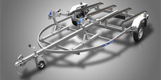
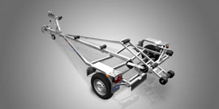
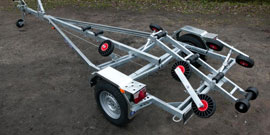
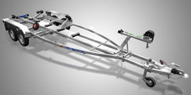

Главная
Катера
Лодочные моторы
Прицепы
Смазочные материалы
Гребные винты
Контакты
Лодочные прицепы Respo
Каталог лодочных прицепов Respo
Прайс-лист (цены) на лодочные прицепы Respo
Respo V38T
Respo V40T (Для лодок с килем)
Respo V40T (Для лодок без киля)
Respo V44L
Respo V45L

Respo V46T
Respo V46T (С приёмником)
Respo V48L
Respo V52L

Respo V59L
Respo V59L (Усиленный)
Respo V59T1
Respo V64T1

Respo V64T2

Respo V75T2
Respo V81T2
Respo V81T3
 Прайс-лист (цены) на лодочные прицепы Respo
Прайс-лист (цены) на лодочные прицепы Respo